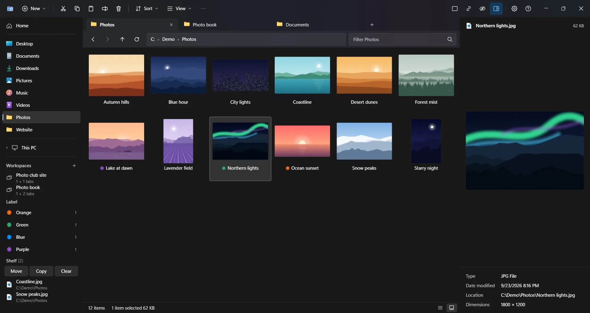
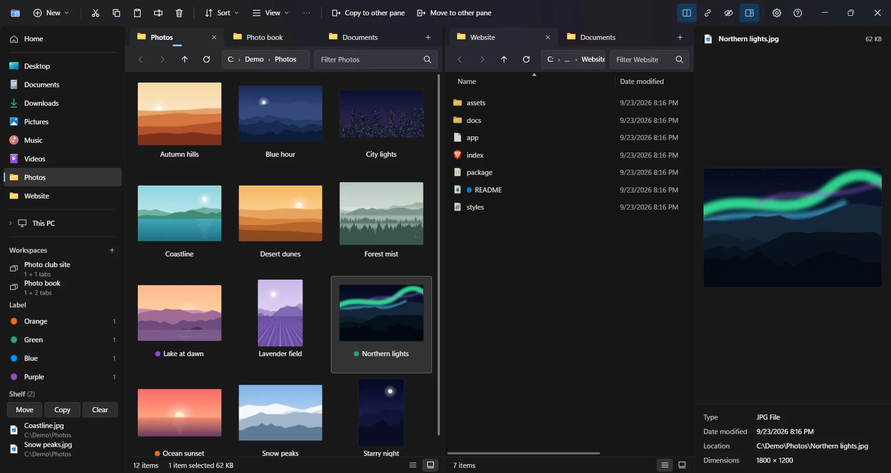
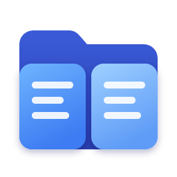

ShiftF5
Two panes that work together
Select items and press Shift+F5 to copy them to the other pane. Shift+F6 moves them, and the panes can follow each other into subfolders.
Try Shift+F5 in the demo ↑

Bipane is a tabbed, dual-pane file manager for Windows that looks and works like the Windows 11 File Explorer, so there is nothing new to learn.
CtrlKWhat it adds
The same keys and right-click menu as File Explorer, plus what File Explorer does not have.
Select items and press Shift+F5 to copy them to the other pane. Shift+F6 moves them, and the panes can follow each other into subfolders.
Try Shift+F5 in the demo ↑Space shows a large preview of photos (HEIC and camera RAW too), video, PDF and Office files, and the arrow keys go through the folder. Nothing else to install.
Try Space in the demo ↑An Undo button right after a delete, move or copy, and the Activity history (Ctrl+Shift+H) to undo earlier steps, also from before a restart. A file replaced by a copy or move goes to the Recycle Bin (on local drives), so Undo restores it too.
Try Ctrl+Z in the demo ↑Open a zip, 7z, rar, tar.gz or other archive like a folder (read-only), then copy what is inside to the other pane with Shift+F5. Password-protected ones open too.
Try Enter in the demo ↑Switch from the command palette (Ctrl+K) or with Ctrl+Shift+D. Alt+P shows or hides the preview.
Try Ctrl+Shift+D in the demo ↑No items match the filter.
↑↓ select · Space Quick Look · ←→ next and previous — the same keys as in the app.
As File Explorer, plus the full Windows menu under "Show more options".
Ctrl+K finds commands and folders by name.
Photos including HEIC and camera RAW, video and audio, PDF, Office and OpenDocument files (without Office), EPUB, fonts and archives.
Save and reopen a set of tabs. Collect items with Ctrl+S, then move or copy them together.
Shift+F2 marks what is only on one side, newer, older or another size, and copies just that across.
Delete, color labels with 1–7, Ctrl+Z. A RAW file goes with its JPEG or HEIC.
And search through subfolders, with Everything or the Windows index when available.
*.jpg, size:>10MB, date:today, label:red. Sort order and grouping are remembered per folder.
Zip in one click; 7z with a password if you like (AES-256, the names encrypted too), tar and tar.gz.
What failed is listed at the end with a retry of just those. Free space is checked first.
The same pinned folders as File Explorer and the Open / Save dialogs of other apps.
A network computer that does not answer never holds up the rest of the app.
ShiftF2How it compares
Compared on September 26, 2026 with File Explorer on Windows 11 25H2 (build 26200) and with Files 4.2.9 (the last two rows on September 27, with PowerToys Peek as documented on August 25, 2026).
| Feature | File Explorer | Files | Bipane |
|---|---|---|---|
| Two panes | — | ✓ | ✓ |
| Copy or move the selection to the other pane with one key | — | — | ✓ Shift+F5 / Shift+F6 |
| Panes that follow each other into subfolders | — | — | ✓ |
| Quick Look with Space | With PowerToys Peek (installed separately) | Opens Peek, QuickLook or Seer (installed separately) | ✓ Built in |
| Search through subfolders with Everything | — | — | ✓ When Everything is running |
| Flat view (the files of all subfolders in one list) | — (a search for * comes close) | — | ✓ |
| What takes up the space in a folder, largest first, as bars | — | — (folder sizes in the list) | ✓ |
| Named sets of tabs to save and reopen (workspaces) | — (reopens the last tabs at sign-in) | — (reopens the last tabs) | ✓ |
| An Undo button right after a delete, move or copy | — | — | ✓ |
| Undo from a list of past steps, also after the app was closed | — (Ctrl+Z only) | — (Ctrl+Z only) | ✓ Ctrl+Shift+H |
| What was deleted from this folder, from the Recycle Bin | — (the whole Recycle Bin) | — (the whole Recycle Bin) | ✓ |
| Each copied file read back and compared with its original | — | — | ✓ In Settings |
| Failed items listed at the end, with a retry of just those | — (stops and asks at each one) | — (asks when a file is in use) | ✓ |
| Compare the two panes' folders, then copy just the differences across | — | — | ✓ Shift+F2 |
| Cull photos while viewing them: color labels with 1–7, a RAW file deleted and labelled with its JPEG, Ctrl+Z | — (PowerToys Peek can delete, nothing more) | — (the Peek it opens can delete, nothing more) | ✓ In Quick Look |
Where the others are ahead: File Explorer is built into Windows, and the Open and Save dialogs of other apps are always File Explorer. Files has themes, Git integration, tags and a column view, runs on Windows 10 and ARM64, and is open source.
The time from opening a folder from the command line until its item count shows (median of 5 on the author's PC, Windows 11 25H2, September 26, 2026).
A folder of 10,000 files, the app already running
The bars run at the measured speed.
| Folder | File Explorer | Files 4.2.9 | Bipane 0.6.0 |
|---|---|---|---|
| C:\Windows\System32 (4,819 items), the app not running yet | — (always running) | 2.9 s | 0.8 s |
| The same, the app already running | 1.0 s (a new window) | 1.0 s (a new window) | 0.2 s (a new tab) |
| A folder of 10,000 files, the app already running | 1.1 s | 1.1 s | 0.2 s |
Inside the app, a folder of 100,000 files opens in about 0.3 s (0.13.0, October 7, 2026; 0.9 s in 0.6.0). Photos that Windows has no thumbnail for yet are made side by side, from the top of the screen down: a screen of 16 phone RAW (DNG) photos fills in about 2 s, where Windows alone makes them one at a time (about 13 s). With System32 open, Files used 249 MB of memory and Bipane 175 MB (private working set, what Task Manager shows).
ShiftDeleteIs it safe?
The only network access is the update check to GitHub, and you can turn it off (Settings → About).
unless you turn on "Open folders with Bipane" or "Open Bipane with Win+E" in Settings. Turning them off, or uninstalling, puts back what was there before.
since the pins are shared by default (File Explorer shows the same pins). Turn sharing off in Settings → General; your pins stay in both.
(Settings → Startup and windows, with "Stay in the notification area when closed"). Turning it off, or uninstalling, removes the startup entry.
(on drives that have one). Only Shift+Delete deletes them for good, and it always asks first.
so Windows may warn you the first time you run it. Each release lists the installer's SHA-256 (see Download).
?FAQ
File Explorer itself has no two-pane view. Bipane looks and works like File Explorer and shows two panes side by side, each with its own tabs. Shift+F5 copies and Shift+F6 moves the selection to the other pane.
Yes. Free for personal and business use. Redistribution and modification are not permitted. See the License.
For opening folders, yes: turn on "Open folders with Bipane" and "Open Bipane with Win+E" in Settings (Win+E takes effect once you sign in again). The Open and Save dialogs of other apps are always File Explorer. Turning the settings off, or uninstalling, puts back what was there before.
Not tested. It is expected to work, but has not been checked. 32-bit Windows is not supported.
The installer is not code-signed, so Windows SmartScreen may show this screen the first time you run it. Choose More info → Run anyway. To make sure the file is the genuine one, compare its SHA-256 with the value on the release page.
No. Your files are handled on your PC only. The only network access is the update check to GitHub, which you can turn off in Settings → About. No usage data is sent.
No. It is free, but the source code is not published. The source code of the bundled 7-Zip (GNU LGPL) is attached to each release.
From Windows Settings → Apps → Installed apps. If "Open folders with Bipane" or "Open Bipane with Win+E" was on, File Explorer takes them back. If "Start when I sign in" was on, the startup entry is removed. Folders pinned to Quick access stay pinned in File Explorer.

Download the installer from Releases and run it. It installs per user — no administrator rights needed.
The installer is not code-signed, so Windows SmartScreen may show this screen the first time you run it. Choose More info → Run anyway. To make sure the file is the genuine one, compare its SHA-256 with the value on the release page.
| OS | Windows 11 (64-bit, x64) |
|---|---|
| Windows 10 | Not tested (it is expected to work, but has not been checked) |
| 32-bit Windows (x86) | Not supported |
| Windows on ARM (ARM64) | Not tested (Windows 11 on ARM runs x64 apps through emulation, so it is expected to work) |
| Installation | Per user (no administrator rights needed); you can choose the folder |